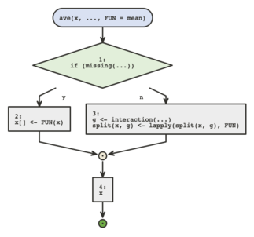
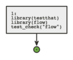
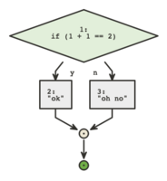
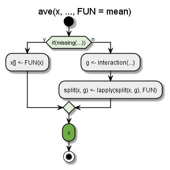
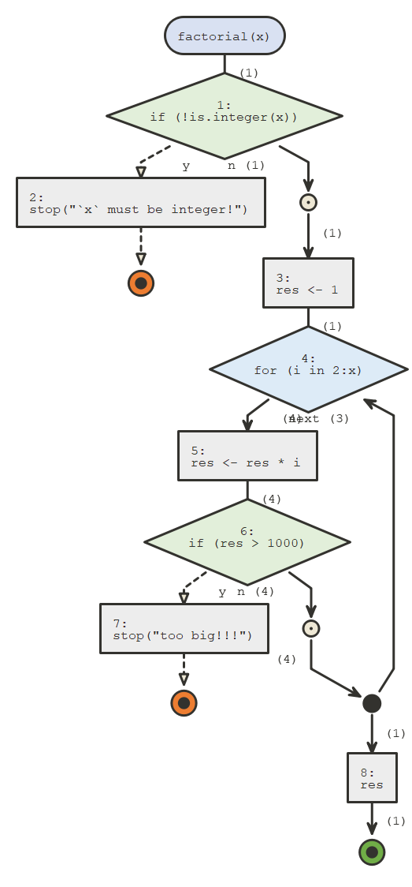
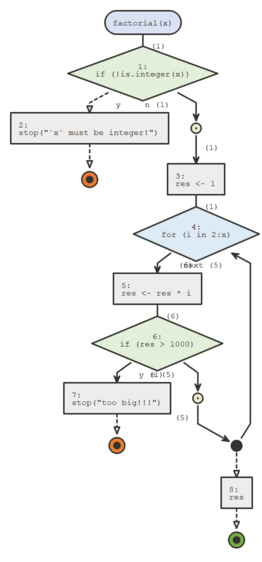
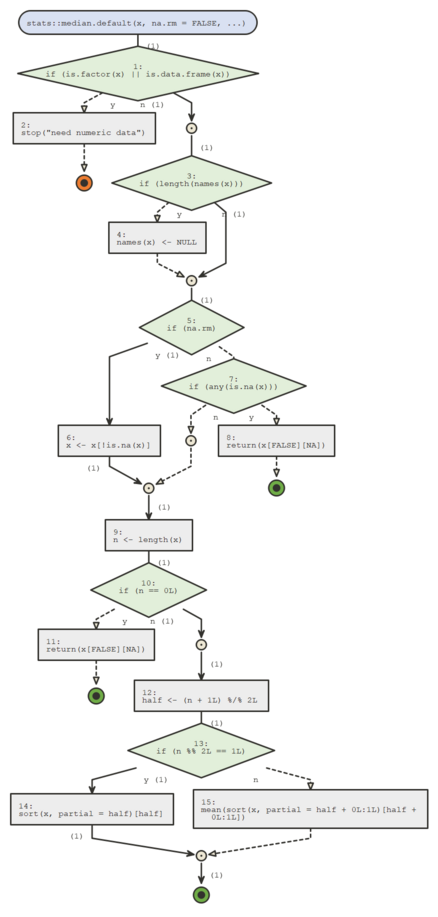

{flow}’s two main functions are flow_view() and
flow_run(), which require only one argument for the
simplest use cases.
flow_view()
flow_view() is used to display the logic of a function,
a one item named list containing a function, a script or a quoted
expression.
# display a function's body
flow_view(ave)
# if non standard evaluation is an issue, use a one element named list
fun <- ave
flow_view(list(ave = fun))
# display script
flow_view("../tests/testthat.R")

if statements always branch into two paths, whether an
else clause is present or not. for,
while, and repeat loops are also
supported.
The colored circles are exit points, orange for errors (using
stop()), green for returned values (using
return()) or just reaching the end of the function.
If you installed {plantuml} you can set engine
to "plantuml", plantuml diagrams are a bit less
flexible but they often look more polished and compact.
# display a function's body
flow_view(ave, engine = "plantuml") 
flow_run()
flow_run actually executes a call to a function, and
displays the logical path. It takes as a first argument an unquoted call
to the function we want to dive in.
factorial <- function(x) {
if(!is.integer(x)) stop("`x` must be integer!")
res <- 1
for(i in 2:x) {
res <- res * i
if(res > 1000) stop("too big!!!")
}
res
}
flow_run(factorial(5L))
#> Warning in normalizePath(Sys.getenv("TMPDIR", Sys.getenv("TMP"))): path[1]="":
#> No such file or directory
#> Warning in normalizePath(Sys.getenv("TMPDIR", Sys.getenv("TMP"))): path[1]="":
#> No such file or directory
#> Warning in normalizePath(Sys.getenv("TMPDIR", Sys.getenv("TMP"))): path[1]="":
#> No such file or directory
#> [1] 120
flow_run() counts how many times code blocks were
entered and these numbers are displayed next to the edges between
parenthesis.
It can also be used on calls that fail, which is convenient for debugging, for instance the following call fails :

If you call flow_run() on a call to an S3 generic, the
appropriate S3 method will be represented.

The "plantuml" engine is not supported by
flow_run().